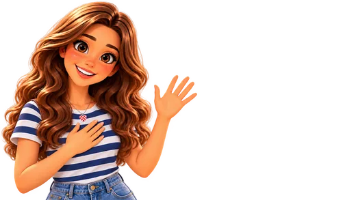

ARMA
ORACIONES

En cada juego hay un grupo de palabras desordenadas en croata. Escúchalas y luego arma las oraciones que te pido: toca las palabras en orden. ¡No necesitas usarlas todas!
🧩 20 juegos✍️ 100 oraciones🔊 Con audio⭐ Nivel A1